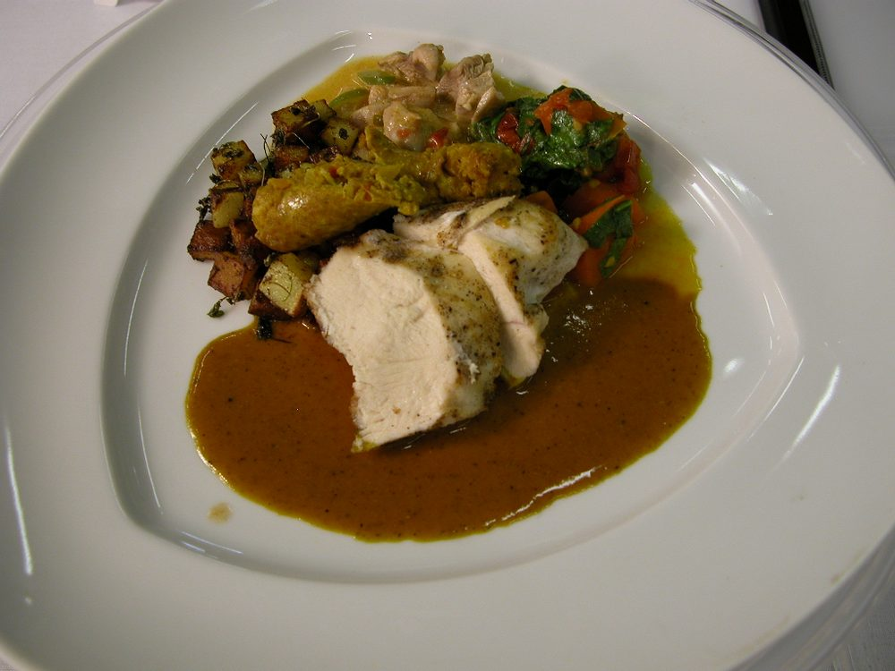

Kundapur Chicken Ghee Roast
chicken cloaked in a dark tangy byadgi masala fried down in a serious amount of ghee

Contains: dairy
Ingredients
Quantities for 4.
- 800g bone-in, cut into small pieces Chickenthighs and drumsticks hold up best
- 1/2 cup, thick Yogurtfor the marinade
- 1, juiced Lemon
- 1/2 tsp Turmeric
- 6 tbsp Gheethe dish is named for it, so do not cut it back
- 15 dried, stems snapped off Kashmiri Chillibyadgi gives the signature colour without the burn
- 2 hot ones Dried Red Chillioptional
- 1 tbsp Coriander Powder
- 1 tsp Cumin Seeds
- 1/4 tsp Fenugreek Seeds
- 1 tsp Black Pepper
- 12 cloves Garlic
- lime-sized ball Tamarind
- 1 tsp, grated Jaggerytakes the edge off the sournessoptional
- 3 sprigs Curry Leaves
- 1/2 cup Water
- to taste Salt
Cookware
stovetop, kadhai, blender
Before you start
- Marinate the chicken in the yogurt, lemon juice, turmeric and 1 tsp salt for at least 1 hour, or overnight in the fridge.
- Soak the chillies and the tamarind in separate bowls of warm water for 20 minutes.
- Bring the marinated chicken back to room temperature before it hits the pan, or it will steam instead of roast.
Method
- Drain the soaked chillies and grind them with the garlic, coriander powder, cumin, fenugreek, pepper and tamarind pulp to a thick, smooth paste using as little water as possible.Keep the paste stiff. A watery masala will never fry down into the glossy coat this dish is about.
- Melt 3 tbsp ghee in a kadhai and fry the marinated chicken over high heat for 6 minutes, until the pieces are sealed and patched with brown.
- Lift the chicken out onto a plate, leaving the ghee and any juices behind.
- Add the remaining ghee to the same pan and fry the ground masala on a low flame for 12 to 15 minutes, stirring often.It is ready when the raw chilli smell is gone, the colour has gone from bright red to brick, and ghee pools clearly at the sides.
- Stir in the jaggery and 1/2 tsp salt and cook another minute.
- Return the chicken with its juices, toss to coat every piece, add 1/2 cup water and cover.
- Cook on low for 15 minutes, turning the pieces twice, until the chicken is done and the masala clings to it with almost no gravy left.If it looks wet at the end, take the lid off and raise the heat for 2 minutes to dry it out.
- Throw in the curry leaves, let them crisp in the hot ghee for 30 seconds, and take it off the heat.
- Rest 5 minutes before serving with neer dosa or plain rice.
Storage
Keeps 3 days refrigerated. The ghee will set solid when cold, so reheat covered on low with 2 tbsp water and it comes back glossy. It does not freeze well.
Nutrition Medium estimate
| Per serving281 g | Per 100 g | |
|---|---|---|
| Calories | 460+ kcal | 164+ kcal |
| Protein | 45.4+ g | 16.2+ g |
| Carbohydrate | 8.5+ g | 3.0+ g |
| of which sugars | 2.8+ g | 1.0+ g |
| Fibre | 1.7+ g | 0.6+ g |
| Fat | 27.0+ g | 9.6+ g |
| of which saturated | 14.2+ g | 5.1+ g |
| of which unsaturated | 10.3+ g | 3.6+ g |
The + means ingredients given to taste rather than by weight are counted as zero, so the true figure is a little higher than shown. Worked out from the listed quantities. Some of the ingredient list is given to taste rather than by weight, so treat these as a guide. Ingredients given to taste rather than by weight are counted as zero, so the real figure is a little higher than this. The + says so. Some ingredients have no exact match in the nutrient database and use the nearest equivalent: curry leaves, jaggery. Estimated from raw ingredients using USDA FoodData Central. Cooking changes are not modelled, and added salt is excluded, so sodium is not given.
Recipe v1.0.0, last updated 2026-07-31. Curated for Khaana and kept under version control.